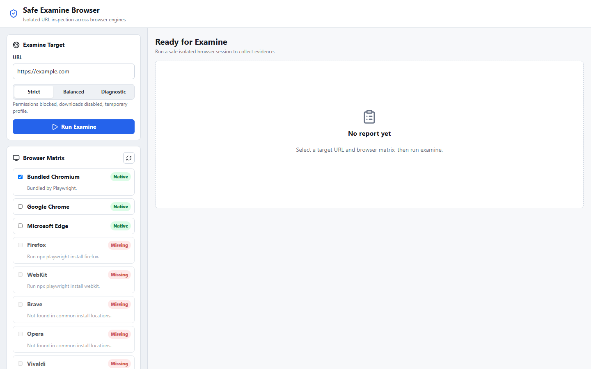
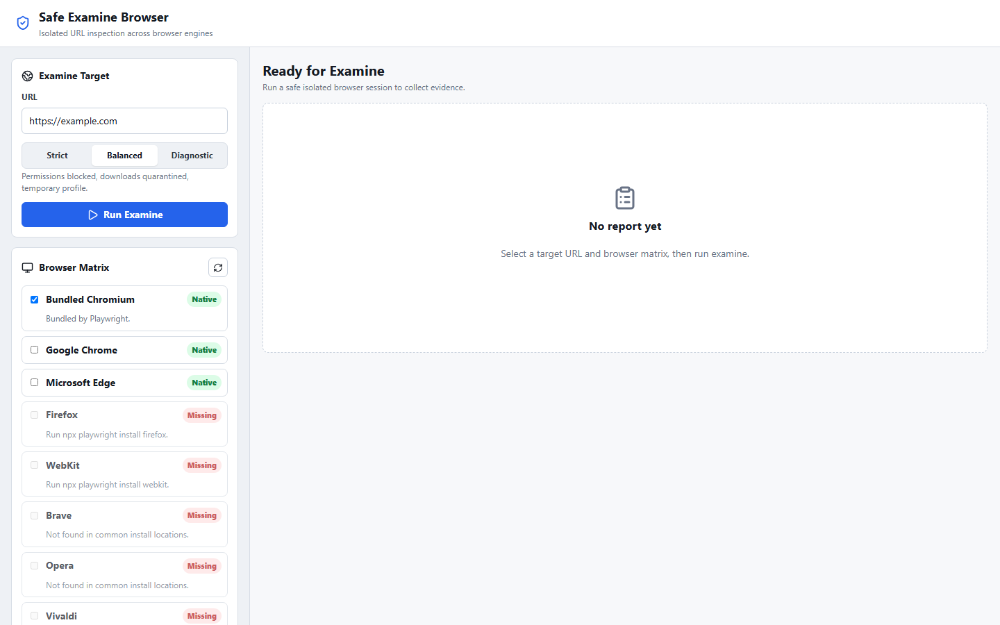
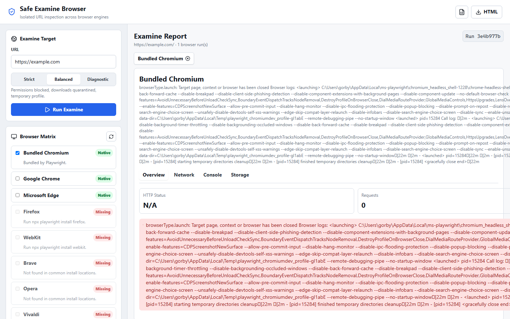
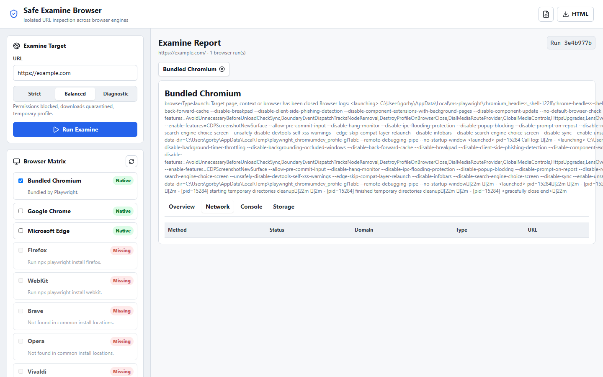
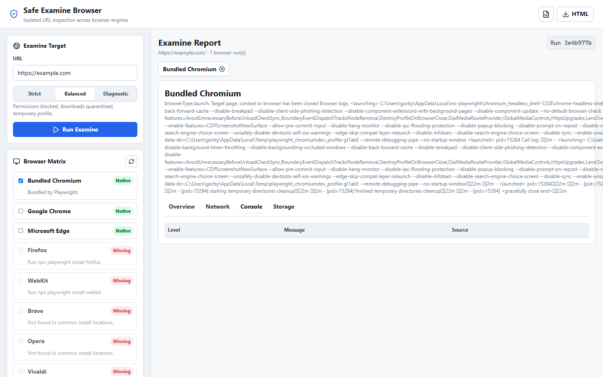

Inspect URLs safely across all your browsers
Sandboxed multi-browser URL inspection tool. Open any URL in isolated sessions, capture screenshots, network activity, console logs, and storage metadata. Evidence without exposure.
Cross-browser matrix
Run one URL across Chrome, Firefox, Edge, Brave, Opera, Vivaldi, WebKit, or any Chromium-based browser in a single pass. Compare behavior side by side.
Sandboxed by default
Temporary profiles, blocked permissions, quarantined downloads. Three safety presets from strict isolation to diagnostic mode.
Full evidence capture
Screenshots at desktop and mobile viewports, network request log, console output, cookies, storage keys, and redirect chains in a structured report.
Safety presets
Three tiers of isolation: Strict for suspicious links, Balanced for general inspection, Diagnostic for QA and compatibility testing.
Structured reports
JSON for programmatic consumption, HTML for sharing. Every run produces a complete telemetry artifact set with screenshots.
CLI + API
Headless mode for automation and scripting. REST API for integration into your existing workflows and toolchains.
Application screenshots




